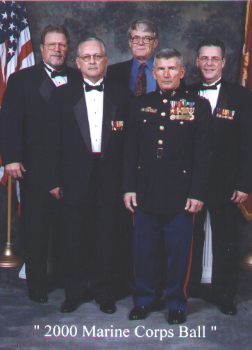
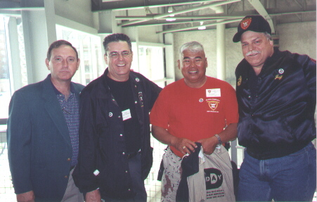
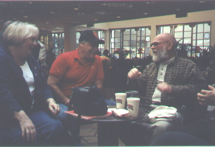

3rd Recon Association Reunion
From an earlier version of the association's website, saved 14 May 2004.
3rd Recon Association Reunion
8-11 November 2000
New Orleans

This reunion became a reality due to the Gallant Efforts of the reunion coordinators
Ray Raymond A-67 and Bill Mutter D-67.
Without a doubt, it was the finest reunion held to date. A great deal of time went into the planning and preparation for this event. As the date approached it consumed their daily lives while they attended to the numerous details. This dedication directly resulted in a gathering of Proud Marines that will be remembered for all time. It was a glorious occasion that represented the Honor and Brotherhood that began so many years ago in a far off place called Viet-Nam.
Ray and Bill we thank you for bringing so much joy to so many!
Alpha Company Photo's
The photos on this page of Alpha Company members and their wives are presented in "thumnail format" Click on the photo to enlarge.
They are placed here in no particular order. More will be added periodically.

(photograph not available) (missing from the original site) Ray and Delores Raymond relax a little at the Marine Corps Ball.
 Col. Howard Lovingood and Betty. Howard was the Company Gunny A-66/67 and was our Honored Guest Speaker at the Association Banquet.
Col. Howard Lovingood and Betty. Howard was the Company Gunny A-66/67 and was our Honored Guest Speaker at the Association Banquet.

 Ray and Don Schwinn
Ray and Don Schwinn


 "Moon" and Donna McMullin
"Moon" and Donna McMullin
 Ray Raymond, SgtMaj. Ott C. Farris, George Neville
Ray Raymond, SgtMaj. Ott C. Farris, George Neville
More Photos